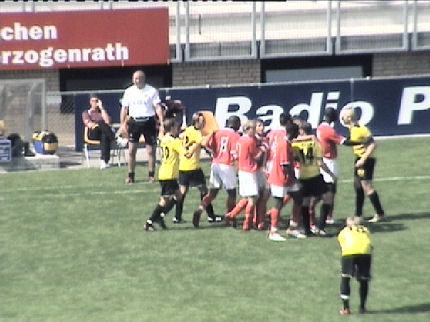

|
Roda JC - Alemannia Aachen (6-0) 6 augustus 2006
|
Roda treedt aan tegen een zwaar gehavend Alemannia Aachen (10 spelers
geblesseerd/met rust). Het team speelt in de legendarische tenues van
landskampioen Rapid JC (1956).
Vuurwerk op west.
De west- en zuidtribune zaten goeddeels vol. De halfvolle oosttribune bleek
een Duitse enclave.

Eeen Aachen spandoek op west.

De sterk spelende Cissé ontoet zich van zijn tegenstander en schiet de bal
uiterst rechts via de paal binnen: 1-0, (17').

Het Rapid-shirt.
Vandamme schiet van grote afstand keihard binnen: 2-0, (26').
Agustien schiet vanaf een meter of twintig tegen de onderkant van de lat
waarna de bal het veld in terugstuit. Omdat de bal daarbij de doellijn
passeert is het 3-0, (38').
Vergeleken bij de vorige oefenpot tegen Düsseldorf leek het of er een totaal
ander Roda stond. Prima combinerend en de bal bleef in de ploeg, iets wat
jarenlang niet meer vertoond is.
Van Tornhout kopt 4-0 binnen, (51').

Niet veel later is er een kortdurende "clash".
Roda und der TSV.
Aachen wisselde volop. Roda begon daar pas halverwege de tweede helft
mee nadat Meeuwis keihard op de lat schoot. Ook Sonko en Cristiano
kregen speelminuten.
Een hard afstandschot van De Jong: 5-0, (73').
Aachen komt er vrijwel niet aan te pas en de Rodasupporters amuseren
zich zeldzaam goed.
Het is niet meer bij te houden. In de 82e min. maakt Vandamme zijn tweede
doelpunt: 6-0.
De grootste overwinning van Roda JC in het PLS tot nu toe.
Einde wedstrijd, de Open Dag kan beginnen.
Maar eerst nog even de wedstrijd evalueren...
© Koempels Pleasure Dome
|